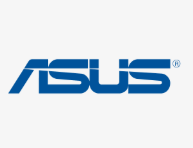

企業 AI 工作提示詞庫
1131 個 AI 提示詞模板，依「產業 × 部門」雙軸快速找到可用指令
1131 個實戰提示詞模板，可依產業或部門雙軸瀏覽，也能直接描述需求讓 AI 推薦。從保險、長照、業務到會計財務，先選情境，再填資料，最後複製到 ChatGPT、Claude 或 Gemini。
入口一：立即產生提示詞
搜尋模板、選分類、填欄位，快速取得可直接貼到 AI 工具的完整指令。
入口二：企業 AI 培訓與陪跑
了解阿峰老師如何協助團隊把 AI 工具導入真實工作流程。
276
提示詞模板
13
分類入口
400+
企業與機構
一站搞定 · 選工具
🖼️ 這張卡的範例圖會長這樣
↑ 這是長出來的樣子(範例圖)
📝 文字提示詞
選分類 → 點一張卡 → 填角色／情境／期望 → 一鍵複製,貼到 ChatGPT／Claude／Gemini 就能用。
想把這些變成公司專屬 SOP 或部門工具包?
討論企業導入企業 AI 培訓與陪跑服務
工具可以先上手，真正的價值在於把 AI 放進團隊每天會用的工作流程。

黃敬峰（阿峰老師）企業 AI 培訓/陪跑專家
從策略、課程設計到部門實作，協助企業把 AI 應用從「知道」推進到「每天真的用」。
400+
企業與機構輔導經驗
實戰
用工作場景設計練習
陪跑
導入 SOP 與工具包
查看合作企業與機構 Logo





查看授課現場與見證
台灣生物科技公司
為中高階主管帶來 AI 策略課程，深入探討產業應用與未來趨勢。
馬來西亞大學 MBA 課程
分享 AI 商業應用實戰經驗，啟發學員的創新思維與國際視野。


查看學員與課程見證影片
學員怎麼說
取自阿峰老師實際課程的學員見證
📈 台灣長照協會工作坊：用 AI 讓機構評鑑製作省下 90% 的時間
「原本以為 AI 就只有 ChatGPT，上完才發現每個 AI 擅長的領域都不一樣。這堂課像一份懶人包，本來要花一兩個月自己研究，現在很快就知道哪件事該用哪個 AI。」
—— 公開班學員「我自己摸索 AI 一陣子，來上阿峰老師的課才真的「懂」AI、用得更清楚，還學到很多面對未來的知識。阿峰老師的課，100 分！」
—— 表演製作業學員「AI 工具多到不知道怎麼選。阿峰老師把它們很清楚地整合起來，教你建出自己的 AI 工作流，用起來更有效率、更順。」
—— 寶哥《你的人生使用手冊》「老師把「AI 是助手、人才是主導」講得很清楚，讓我知道它能做什麼、不能做什麼。我把今天學的帶回公司跟同事開了分享會。」
—— 專案管理公司學員立即聯繫，開啟 AI 轉型之旅
讓阿峰老師為您量身打造最適合的 AI 導入方案。